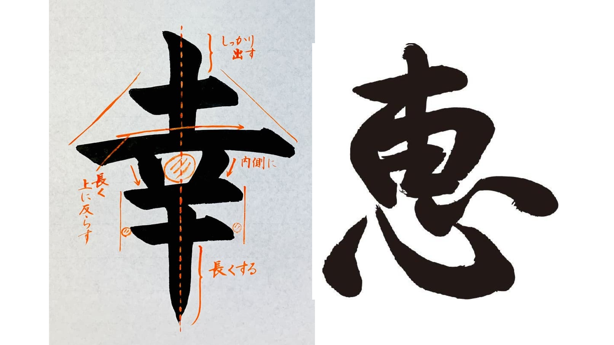

<!DOCTYPE html>
<html lang="en">
<head>
    <meta charset="UTF-8">
    <title>N EDO Lattice Visualizer</title>
    <script type="importmap">
        {
          "imports": {
            "three": "./node_modules/three/build/three.module.js",
            "three/webgpu": "./node_modules/three/build/three.webgpu.js",
            "three/tsl": "./node_modules/three/build/three.tsl.js",
            "three/addons/": "./node_modules/three/examples/jsm/",
            "troika-three-text/webgpu": "./troika-three-text/dist/troika-three-text.webgpu.esm.js",
            "troika-three-utils": "./troika-three-utils/dist/troika-three-utils.esm.js",
            "troika-worker-utils": "./troika-worker-utils/dist/troika-worker-utils.esm.js",
            "bidi-js": "./node_modules/bidi-js/dist/bidi.mjs",
            "webgl-sdf-generator": "./node_modules/webgl-sdf-generator/dist/webgl-sdf-generator.min.mjs"
          }
        }
    </script>
    <script type="module" src="./load-diss-wasm.js"></script>
    <script src="node_modules/three-nebula/build/three-nebula.js"></script>
    <style>
        body {
            margin: 0;
            overflow: hidden;
        }
        canvas {
            width: 100vw;
            height: 100vh;
        }
        #text {
            position: absolute;
            top: 0.5em;
            left: 0.5em;
            z-index: 100;
            color: white;
            font-family: monospace;
            font-size: 18px;
            color: #11dd33;
        }
        #overlay {
            position: absolute;
            top: 0;
            left: 0;
            width: 100vw;
            height: 100vh;
            object-fit: cover;
            opacity: 0.2;
            z-index: 100;
            pointer-events: none;
        }

        @font-face {
            font-family: 'Fira Sans';
            src: url('FiraSansExtralight-AyaD.ttf');
        }
        .note-text {
            font-family: 'Fira Sans', monospace;
            font-weight: 800;
            position: absolute;
            pointer-events: none;
            user-select: none;
            text-align: center;
            color: white;
            line-height: 90%;
            text-decoration-thickness: 0.2em;
        }
    </style>
</head>
<body>
    <div id="text"></div>
    <!--  -->
    <script src="math.js"></script>
    <script src="helpers.js" type="module"></script>
    <script src="configs.js" type="module"></script>
    <script src="just-intonation.js" type="module"></script>
    <script src="harmonic-context.js" type="module"></script>
    <script src="drawn-objects.js" type="module"></script>
    <script src="note-tracking.js" type="module"></script>
    <script src="recording.js" type="module"></script>
    <script src="sculpture.js" type="module"></script>
    <script src="main.js" type="module"></script>
</body>
</html>
